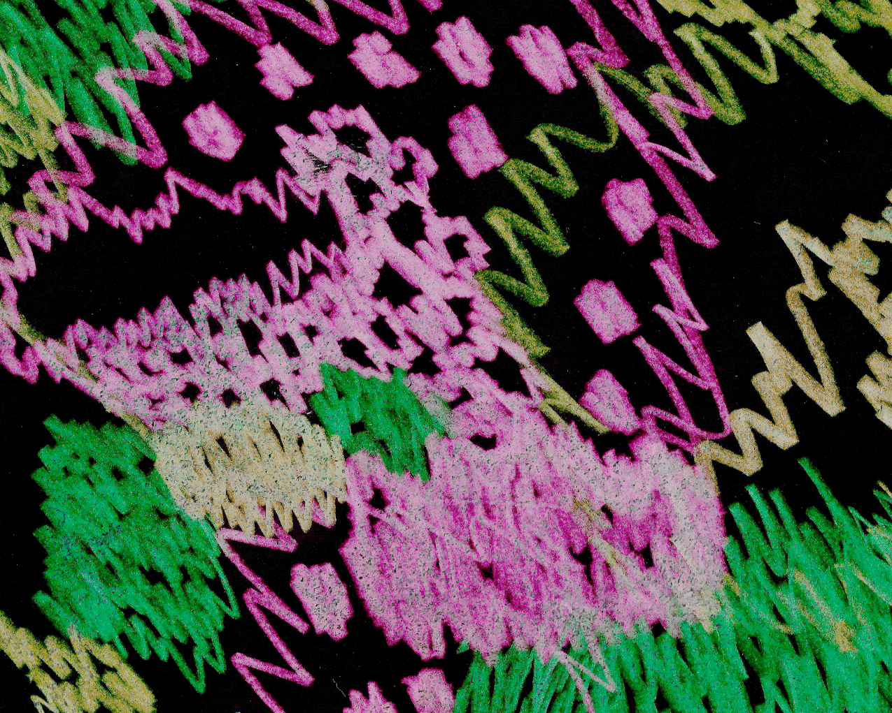
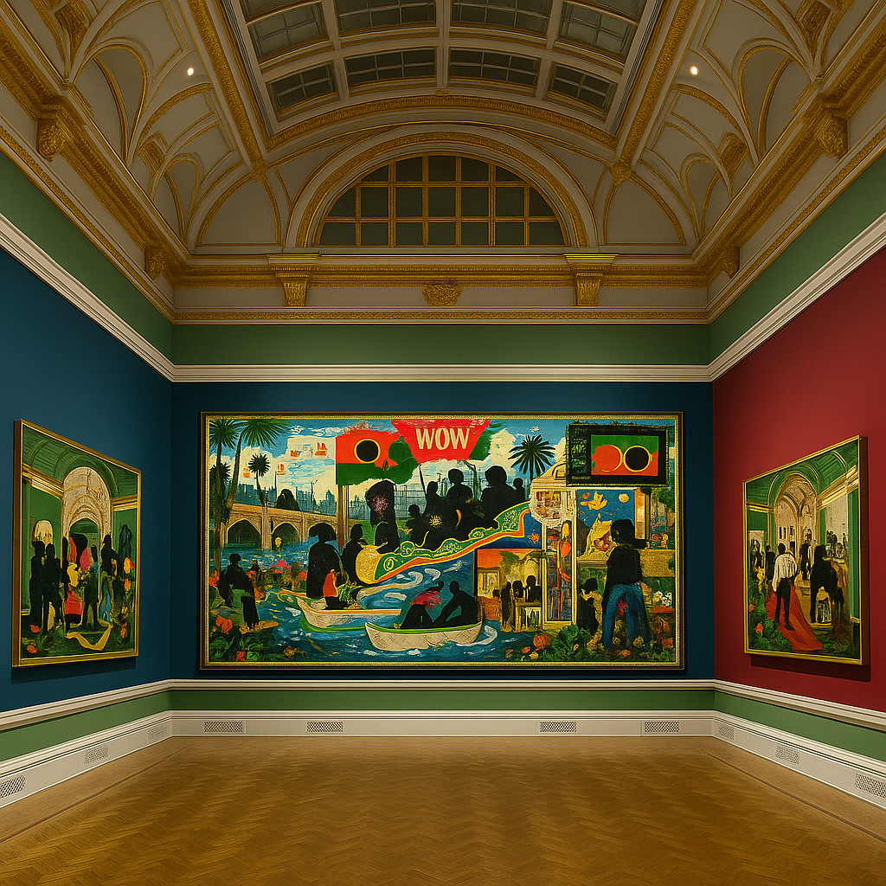

Conheça a máquina cultural NEGATIVO.mov
Para instituições, museus, centros culturais, artistas, municípios, programas e plataformas que precisam de pensamento e forma em alto nível.
→ Página estratégica completa: Operação — NEGATIVO.mov
Da cultura como fluxo, não vitrina
NEGATIVO.mov prova que a cultura não precisa esperar audiência para existir: ela pode aparecer como fluxo vivo, não como catálogo nem feed ansioso.
Miranda do Douro entra como matéria a ser reorganizada, não como filtro de identidade. A estética do negativo é um atrator — mas o essencial é a forma funcionando: navegável, indexável, escalável.
Por trás de cada texto, vídeo ou desenho, o que interessa é a operação: cruzar fluxo e repertório em mídias concretas, produzindo formas improváveis que reencenam o território e abrem sempre resto e desejo.
O manifesto completo recolhe essa máquina em dez operações: fluxo & repertório, resto, Museu do Possível, Cinema.triz, Gramática Improvável, máquinas culturais, estética materialista, território, assinatura autoral e convite à instituição que ainda não existe.
Frentes em operação
Cinema.triz
Colunistas
Ensaios
Museu Digital
Experimentos Visuais
Operação
Cinema.triz
Protótipos pobres de cinema e estudos de diferença mínima: ônus na forma, não no meio. Frames e roteiros operam em matrizes que nunca fecham — toda imagem produz resto, toda novidade é sintaxe recombinada do que insiste em voltar.
Personas & colunistas NEGATIVO.mov

Ensaios & Filosofia
Livro em produção
Museu do Possível
Superfície em tempo real
Experimentos visuais & negativos
Fluxo em estudo de textura de suiornotsui
A matéria viva
A imagem que aqui aparece não deriva de um repertório prévio nem de uma lógica institucional de seleção; ela emerge como matéria que se impõe antes de qualquer cálculo. O desenho — feito à mão, atravessado por gestos que não obedecem a programas nem a distribuições previsíveis — carrega a densidade própria de um fluxo que não se deixa reduzir a esquemas. A sua presença não resulta de um critério de relevância estética, mas de uma contingência material da forma: é matéria que chega, que insiste, que se apresenta como corpo sensível antes de qualquer tentativa de estabilização. Neste sentido, ela não ilustra uma teoria; ela a antecede enquanto acontecimento.
A escolha desta imagem não responde a uma hierarquia entre obras, nem a uma coerência temática, nem a um alinhamento com discursos vigentes. Ela responde a algo mais elementar: ao fato de que a forma aparece onde aparece, e que essa aparição é sempre atravessada por condições históricas que escapam ao controle. Toda imagem traz consigo um campo de forças que não pode ser totalmente simbolizado: o gesto que lhe deu origem, o tempo que a constituiu, a vida que a cercou, as pequenas contingências que decidiram sua sobrevivência. Há sempre um ponto cego que participa da inscrição — uma deriva mínima, um desvio imperceptível, um encontro que poderia não ter acontecido e que, no entanto, determina a forma que agora se vê.
É por isso que esta imagem funciona como matéria viva dentro do dispositivo. Ela não é suporte para a operação; é resistência à operação. Não se oferece como superfície neutra, mas como campo tensivo onde o gesto manual, com suas irregularidades e densidades, confronta a lógica estatística da saturação. A imagem carrega uma intensidade que não pode ser deduzida de nenhum repertório: uma espécie de resto originário, o traço do que escapa ao cálculo e que, ao mesmo tempo, torna possível a operação da máquina. A matéria sensível aqui não é ilustração nem exceção; é aquilo que introduz o improvável no encontro com o provável.
Assim, a presença desta imagem não responde a critérios de justificação, mas a uma lógica anterior à escolha: ela aparece porque apareceu, porque se deixou encontrar num determinado momento, porque a história — com todos os seus desvios ínfimos, acidentes discretos e gestos circunstanciais — fez com que fosse esta e não outra. Não há garantia, nem intenção, nem teleologia. Há apenas o fato de que o fluxo se inscreve quando se encontra com um dispositivo capaz de acolher aquilo que não se repete. Esta imagem é isso: o improvável tornado matéria; o acaso tornado forma; a contingência tornada campo de inscrição para o encontro com a probabilidade saturada.
Híper-repertório em negativo probabilístico de “Kerry James Marshall — The Histories”
Kerry James Marshall confirma, com a mesma clareza que define toda a sua trajetória, uma centralidade incontornável: a figura negra como núcleo histórico, estético e político, deslocada do silêncio periférico para o centro simbólico da pintura ocidental. Em cada ciclo, de cada década, reiteram-se as mesmas camadas fundamentais — memória, migração, infância, diáspora, narrativa — reorganizadas em telas que parecem insistir na necessidade urgente de reinscrever o corpo negro na história da arte e nas suas instituições emblemáticas. A monumentalidade do palácio europeu, com as suas talhas douradas, cúpulas, galerias e genealogias, torna-se, assim, o cenário onde essa presença se torna fenomenal, inequívoca, e, por isso mesmo, histórica.
Ao percorrer a exposição, o visitante reencontra a articulação característica da obra de Marshall: séries estruturadas, referências acumuladas, iconografias cruzadas entre tradição ocidental e simbolismos africanos, atravessadas por subtis gestos políticos. Os estúdios, bibliotecas, museus e escolas de arte surgem como espaços de mediação onde o artista reconstrói um repertório visual que sempre lhe foi imposto como exterior. A pintura, nesse contexto, torna-se o lugar onde passado e presente se projetam em paralelo, convocando narrativas bíblicas, mitológicas e sociais que configuram a experiência negra como acontecimento estético incessante. Nada aqui é ocasional: tudo é inscrito, reiterado, sedimentado.
As obras emblemáticas dos anos 90 — crianças, parques, danças, famílias — reaparecem como cenas que, mesmo quando aparentemente simples, transportam códigos políticos que se revelam lentamente: paletas marcadas pelo vermelho-preto-verde, ecos dos Panteras Negras, slogans de autodeterminação, símbolos da resistência. Em telas posteriores, a crítica amplia-se: deslocações, travessias, pontes transportadas, líderes dos direitos civis transformados em memória pictórica, episódios trágicos reelaborados com ironia silenciosa. Cada uma dessas peças funciona como documento afetivo e político; cada gesto pictórico insiste em tornar visível aquilo que a história, repetidamente, tentou ocultar.
No final, quando Marshall afirma a necessidade de uma “presença fenomenal que seja inequivocamente negra e bela”, a frase traduz o eixo recorrente de toda a sua obra: produzir, pela pintura, uma forma que resista às estatísticas visuais da tradição ocidental e que reescreva o lugar do corpo negro no imaginário artístico. A exposição, ao reunir décadas de trabalho em plena Royal Academy, confirma e reforça este gesto central — um gesto que, reiterado ao longo do tempo, se torna quase uma lei estética: a figura negra não apenas entra no museu, mas reorganiza, pelo seu próprio peso histórico, a narrativa que o museu acreditava dominar.
Resto improvável de cruzamentos em “Kerry James Marshall — The Histories”

Figura centra centro.
Centro cerca figura.
História repete presença.
Presença repete história.
Memória move memória.
Memória torna memória.
Memória retorna memória.
Figura retorna.
Retorna figura.
Retorna o centro que retorna a figura que retorna o centro.
Centro = figura.
Figura = centro.
História = retorno.
Retorno = presença.
Presença = repetição.
Reitera-se o regime:
referência / recorrência / reverberação.
Ressoa, ressai, ressurge.
A figura insiste.
A figura insiste.
A figura insiste.
Insiste porque é forma.
Forma porque é retorno.
Retorno porque é regra.
Regra porque é resto.
E resta —
apenas —
a repetição do retorno repetido.
Retorna.
Retorna.
Retorna.
(um resto(im)-probabilidade de CONSTANÇA BABO)
Operação & parcerias
NEGATIVO.mov é uma máquina cultural que articula estética, filosofia materialista, tecnologia, território e linguagem para criar formas, instituições e dispositivos por vir.
A página estratégica detalha o que essa máquina pode fazer por museus, centros culturais, políticas culturais, artistas, cineastas, plataformas digitais e programas que precisem operar num outro patamar de forma e pensamento.
→ Ler a página completa de Operação: Operação — NEGATIVO.mov
O que é o projeto
- Possível enquadramento em incentivos fiscais à cultura.
- Associação a uma estética singular e reconhecível.
- Conteúdos reaproveitáveis em educação, inovação e comunicação.
Email: negativomov@gmail.com
Local: Miranda do Douro, Portugal
Ajustamos formatos a projetos específicos em cultura, inovação digital, educação e desenvolvimento territorial.
Para propostas estruturadas ou colaborações institucionais, leia primeiro a página de operação cultural → Operação — NEGATIVO.mov
NEGATIVO.mov é um processo aberto. Abaixo estão os canais onde o fluxo segue rodando — textos, vídeos, crónicas, bastidores e experimentos. É aqui que se acompanha a vida do projeto em tempo real, não só o portfólio.